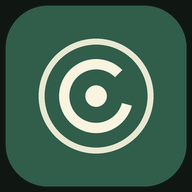

此刻 / 你的人生档案
手机与电脑都能用。照片、文档、一段声音，不必每次从打字开始。
不自动上传，不用注册。换设备前，记得导出备份。
Word、Excel、PDF 可提取可读文字。影音保存原件；暂不识别画面或转写。网页版不读取其他 App 内的数据。
属于你的生活线索
选几张照片，导入一份文档，或者留下一段声音。
档案属于你，也要有一份自己的备份。
完整备份包含经历、选择记录和附件原件，保存为 JSON。当前每次导入最多 100 MB、10,000 条。Mac 导出文件可导入文字线索，但不含原始媒体。
用系统的文件传输方式，把备份交给另一台设备后，再在那里导入。目前没有自动云同步；请不要把私人备份公开分享。
浏览器可能拒绝保留请求，这不影响当前记录；备份才是跨设备保留原件的方式。
移除的记录暂留本机，可随时恢复；不会自动永久清空。
在现代浏览器打开这个链接即可使用，无需注册。iPhone / iPad 建议使用 Safari，安卓建议 Chrome；Mac、Windows 和 Linux 可使用支持的浏览器。
iPhone / iPad：在 Safari 的分享菜单选择“添加到主屏幕”。安卓 / 电脑：浏览器支持时会提供“安装应用”或“添加到桌面”。没有安装入口也可以直接使用网页。
文件会保存在当前设备浏览器，可查看或下载原件。单个附件最多 50 MB，文档文字解析最多 12 MB；PDF 最多 30 页，Excel 最多 10 个工作表、每表 2,000 行。旧 DOC / XLS 只保存原件。浏览器无法播放的格式仍可下载。
首次联网加载并显示“离线已准备”后，核心记录功能可离线使用。数据不自动上传；不同设备、不同浏览器或桌面模式可能各自保存一份，使用完整备份手动迁移。网页没有登录锁，共用设备上的使用者可能访问此浏览器的档案。
网页不能直接读取微信聊天、购物订单或其他 App 的私有内容。可以导入自己导出的文件。Mac 自动采集端另行提供；其他系统的原生自动采集、影音识别和跨设备自动同步尚未上线。
完整版本说明 →
按这台设备的本地时间。在网页或桌面网页应用运行时提醒；关闭页面、锁屏或后台冻结可能使提醒延迟或停止。
下载并导入系统日历的每日提醒，通知由日历管理。实际声音与重复提醒依日历和系统设置而定。网页里的开关、今天已写和时间修改不会同步到已导入的日历；需要到日历中修改或删除，也不会自动同步日记。
给今天留一页
今天发生了什么？有什么想留给未来的自己？写一句话，也算认真地留下这一天。
记录功能需要启用 JavaScript。你仍可阅读人生档案介绍。